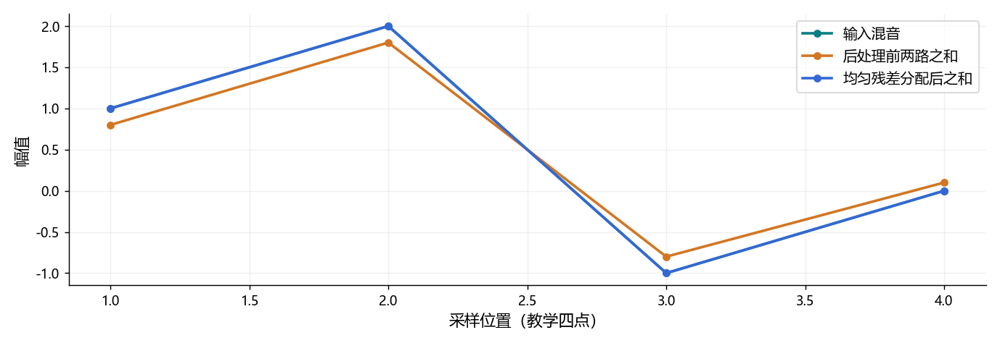

看图理解 · 跟着推演 · 对照真实结果
项目二 · 两个人的声音怎样分开并公平评分
通过PIT配对与四点残差分配实验，理解Conv-TasNet分离、后处理和项目证据。
点播放开始；点右侧小节可跳到不懂的部分。进度保存在当前浏览器。
先看视频，再动手
不必先读完正文。跟着视频暂停预测，看到运行图时解释横轴、纵轴和曲线，再做下面的自测。完整图文保留作查阅；视频讲清本课核心算例，不把看完等同于掌握全部专题。
先修：采样、数组、分贝、卷积和训练基础
- 解释波形编码与两路输出的形状
- 手算PIT的两种排列
- 区分混合一致性、分离正确和微调增量
跟着运行：注释代码、实际输出与结果图
下面代码在生成本站时实际执行。这里只是教学小实验，不是完整模型训练或业务设备测评。
import numpy as np
# 四点教学波形，z代表已完成公共增益校准的两路
x = np.array([1., 2., -1., 0.])
z = np.array([[0.4, 1., -0.4, 0.2], [0.4, 0.8, -0.4, -0.1]])
raw_sum = z.sum(axis=0)
r = x-raw_sum # 残差可以为负，不是非负噪声强度
y = z+r[None, :]/2 # 两路各分一半残差
fixed_sum = y.sum(axis=0)
position = np.arange(1, 5)
# 另一个人为评分矩阵：行是参考，列是预测，不由四点波形计算
Q = np.array([[-3., 12.], [11., -4.]])
normal = (Q[0, 0]+Q[1, 1])/2
swapped = (Q[0, 1]+Q[1, 0])/2
print('残差:', np.round(r, 3))
print('求和误差:', round(np.max(abs(fixed_sum-x)), 12))
print('原配对/交换:', normal, swapped)
本次实际输出
残差: [ 0.2 0.2 -0.2 -0.1] 求和误差: 0.0 原配对/交换: -3.5 11.5

闭卷自测：Q=[[-3,12],[11,-4]]时PIT选择什么？求和与混音一致能证明分离正确吗？
选择交换，平均(12+11)/2=11.5，高于原顺序−3.5。求和一致不充分：一路输出全部混音、另一路为零也满足约束。
逐字讲稿 · 可定位回看
把两个人同时讲话录进一个麦克风，得到的是一路混合波形。分离模型希望输出两条尽量各含一个人的声音。输入一个声道和输出两个声源并不矛盾，声道描述设备，声源描述发声对象。
这个项目不把音频变成文字，所以不是 ASR；它也不自动给说话人姓名，所以不是身份识别。输出的第一路是谁，本身可能没有固定名字，这正是后面需要处理排列问题的原因。
本视频按已有项目证据讲结构和结论，新运行一个明确标注的算术实验，不重新加载完整模型。官方网络和预训练权重来自上游，个人贡献要如实区分局部适配、后处理、评测和自己实际掌握的部分。
项目输入要求八千赫兹单声道，四秒就是三万两千点。单条输入张量可以写成一条批次、一个通道、三万两千点。编码器用可学习的一维卷积，把波形换成许多特征序列。
核长十六、步长八、两侧填充八，代入公式得到四千零一个编码时间步。编码通道数五百一十二表示学到的特征方向，不是五百一十二只麦克风，也不直接等于固定 STFT 频率格点。
模型为两个声源分别预测特征掩码，再使用解码器重建两条波形，最终形状为批次、两个声源、原样本长度。尾部为了整除步长而补的点要裁掉，否则与参考对齐会出问题。
掩码网络使用多组膨胀卷积，让较深层看到更长时间范围。膨胀表示隔着一定间距取特征，不是把采样率改了。残差路径继续传信息，跳跃路径把不同层的结果汇集起来。
本项目上游结构使用 ReLU 掩码，只保证非负，不保证每个数小于一，也不保证两路掩码之和是一。不要把看到 mask 就自动理解成分类概率或零到一的开关。
当前实现包含双侧时间填充和跨时间归一化，使用整段上下文，是离线非因果版本。处理一段音频很快，不代表支持流式；简单切小块也可能让上下文和边界行为改变。
假设人为给出一个评分表：参考 A 对预测一是负三，对预测二是十二；参考 B 对预测一是十一，对预测二是负四。按原顺序平均是负三点五，交换后平均是十一点五。
PIT 比较这两个合法排列，选择交换，因为第二路更像 A、第一路更像 B。每一路参考和每一路预测必须恰好使用一次，不能让两个参考都挑同一个看起来好的输出。
匹配通常按整句完成，不能每一帧随意换人，否则会掩盖输出身份中途跳变。这里四个分数是教学输入，不是项目测试成绩，也不是后面四点波形重新算出的 SI-SDR。
SI-SDR 把估计投影到干净参考方向，比较沿参考的能量与剩余失真，整体增益变化不应自动带来好分数。参考需要非零有效能量，静音和异常要有明确处理，不能硬算出漂亮结果。
SI-SDRi 是输出分数减去原混音对同一参考的分数。微调增量则是微调模型减预训练模型，并保持同样后处理。一个描述分离相对不处理的收益，另一个才接近你改动带来的差别。
例如某方案 SI-SDRi 约十三点八分贝，并不意味着你的局部微调优化了十三点八分贝；其中可能主要是预训练模型已有能力。报告时把基线名称、数据和计分方式一起说出。
项目先根据混音与两路估计之和，计算一个公共标量增益，且不读取干净参考。两路一起缩放后叫 z。接下来用混音减去两路之和，得到当前还没有解释的残差。
uniform 方法把残差一半加给第一路，另一半加给第二路。若混音第一个点是一，而两路分别零点四与零点四，残差零点二，每路加零点一，结果各为零点五。
若某一点两路和超过混音，残差就为负，此时是在两路中减掉一点。energy 方法则按全句能量占比分配。它们都只是约束输出求和，不会自动知道哪个残差属于哪个真正说话人。
前四行直接给定混音和已完成公共增益校准的两条教学序列。每条只有四个数，因此你可以逐点用笔核对。这里并没有运行完整模型，也没有把这四个点叫作真实语音。
先沿声源轴相加，得到每个采样位置的重建和，再求残差。新增的轴使同一条半残差广播到两个声源，两路都加同样的值。最后再次求和，应该回到原混音。
后半段另建人为评分矩阵，计算原顺序和交换后的均值。代码注释明确这与四点波形是两个算例，避免把人造分数伪装成波形评测。程序分别打印残差、求和误差和两种配对分数。
横轴只有四个采样位置，纵轴是幅值。先看后处理前的两路之和，与输入存在缺口；均匀分配残差后，两路之和与混音重合，打印的最大误差在数值精度范围内为零。
但图里根本没有两路真实干净参考，所以你不能从重合推出分离正确。一个极端反例是第一路直接输出全部混音，第二路全为零，它们相加也完全正确，却根本没有把两个人分开。
若混音里还含噪声，强制两路相加等于混音，也会把噪声分回两路。混合一致性是有用约束，不是无条件降噪。必须结合每个声源的指标、顺序匹配和具体失败样例分析。
项目从同一官方预训练权重开始，只更新输出 PReLU、输出卷积和解码器，约十四万个参数，占总数约百分之二点八一。编码器和时间卷积主体仍参与前向，但参数被冻结，并不是从零训练整个网络。
已提交报告比较三个种子和三种后处理。主要 gain 控制下，干净条件的平均微调增量约零点零九三分贝，配对区间包含零，因此不能断言稳定改善，更不能包装成大幅提升。
测试中六百条干净条件共享源组合和说话人，报告按二十个互不共享说话人的组重采样，而不是当六百个独立样本。多种子和多种能量比不能自动创造更多独立人物或录音来源。
先闭卷回答：今天的评分表应该选哪种配对？交换后平均十一点五，大于原顺序负三点五。再回答求和误差为零能否证明分离正确？不能，用全部混音给一路的反例就能说明。
接着沿项目入口检查当前到底选择哪个检查点和后处理，不能凭按钮名字猜。恢复训练也不只加载权重，还需要优化器、调度器、随机状态和数据进度；历史 best 与最后一轮不是同一个概念。
面试可以讲清局部适配、配对评测、残差约束和负结果，但不能把网页上已经存在的工作都说成自己独立完成。亲自改一个教学算例、读懂一个源文件、解释一个失败，才能把仓库逐渐转成自己的能力。
适用边界与参考正文
新运行的是四点残差与人为PIT评分算例，不是Conv-TasNet推理。项目历史证据固定提交8e8bd3921ac39587d2407e86aa7204cba52ad77d；未重训、未试听新模型结果或验证流式能力。
图、公式、代码结果均由本站制作；旁白是本地中文语音合成，不是教师真人录音，也不是 NotebookLM 生成。没有向 Google 上传项目材料。